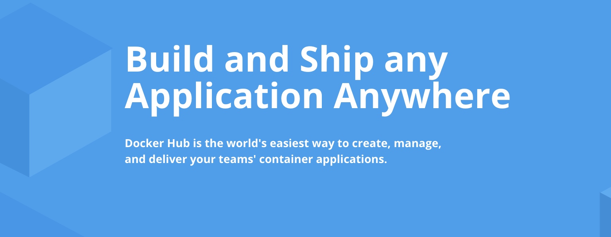
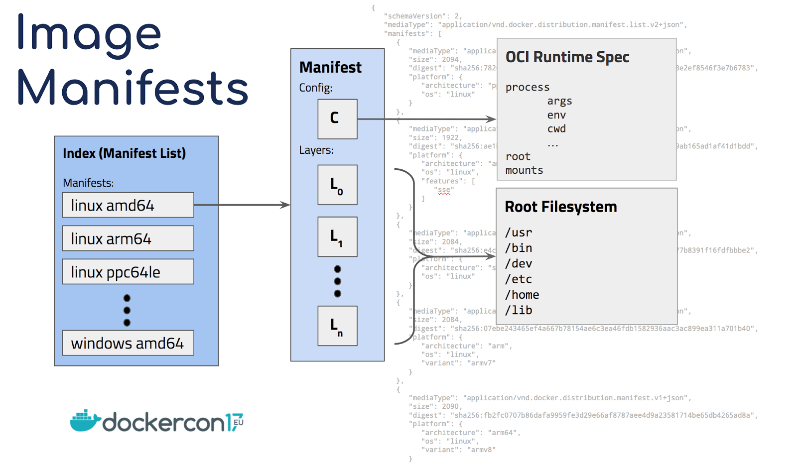
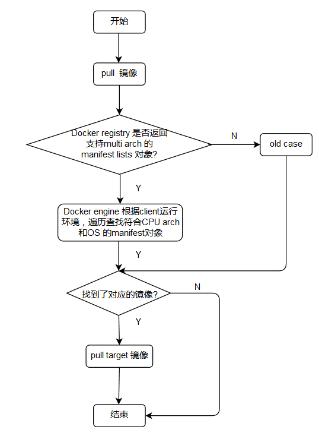

以前一直在想，为什么一个镜像只能在一种架构中使用，有什么办法可以解决多架构的kubernetes集群镜像的问题？经过一段时间的调研，还是找到了解决的方案。
什么是多架构集群呢？
在当前形势下，不少公司选择使用国产服务器，但国产服务器cpu基本上都是小众的架构，比如arm、mips等，而最广泛使用的x86架构的服务器。要引入国产服务器，因为各种现实原因，必然面临着一个kubernetes集群中使用多种架构的服务器的情况。
我一直觉得理想的情况是，kubernetes集群能在各种架构的机器上运行，能在编排层面对应用屏蔽掉底层机器的架构。可以一套编排方案，适用于各种架构的集群。会根据当前调度到的机器的架构，拉取对应架构的镜像。也就是说，我管你最终把我的应用pod运行在哪台机器上，这台机器是啥架构，我啥都不关心，把编排好的文件往kubernetes集群中一丢就完事了。
多架构镜像的构建就是实现这个目的的关键一环。
多架构镜像原理

docker宣称目标是"Build and Ship any Application Anywhere"，如果不解决多架构镜像问题，这个目标也无从谈起。
多架构的实现——manifests

manifests是什么呢? 咱们从docker的源码入手：
// A ManifestDescriptor references a platform-specific manifest.
type ManifestDescriptor struct {
distribution.Descriptor
// Platform specifies which platform the manifest pointed to by the
// descriptor runs on.
Platform PlatformSpec `json:"platform"`
}
// Descriptor describes targeted content. Used in conjunction with a blob
// store, a descriptor can be used to fetch, store and target any kind of
// blob. The struct also describes the wire protocol format. Fields should
// only be added but never changed.
type Descriptor struct {
// MediaType describe the type of the content. All text based formats are
// encoded as utf-8.
MediaType string `json:"mediaType,omitempty"`
// Size in bytes of content.
Size int64 `json:"size,omitempty"`
// Digest uniquely identifies the content. A byte stream can be verified
// against against this digest.
Digest digest.Digest `json:"digest,omitempty"`
// URLs contains the source URLs of this content.
URLs []string `json:"urls,omitempty"`
// NOTE: Before adding a field here, please ensure that all
// other options have been exhausted. Much of the type relationships
// depend on the simplicity of this type.
}
// PlatformSpec specifies a platform where a particular image manifest is
// applicable.
type PlatformSpec struct {
// Architecture field specifies the CPU architecture, for example
// `amd64` or `ppc64`.
Architecture string `json:"architecture"`
// OS specifies the operating system, for example `linux` or `windows`.
OS string `json:"os"`
// OSVersion is an optional field specifying the operating system
// version, for example `10.0.10586`.
OSVersion string `json:"os.version,omitempty"`
// OSFeatures is an optional field specifying an array of strings,
// each listing a required OS feature (for example on Windows `win32k`).
OSFeatures []string `json:"os.features,omitempty"`
// Variant is an optional field specifying a variant of the CPU, for
// example `ppc64le` to specify a little-endian version of a PowerPC CPU.
Variant string `json:"variant,omitempty"`
// Features is an optional field specifying an array of strings, each
// listing a required CPU feature (for example `sse4` or `aes`).
Features []string `json:"features,omitempty"`
}
可以看出manifest其实就是记录镜像的能够运行的cpu架构、操作系统类型、操作系统版本等等信息。multi-arch的镜像，可以看做是多个镜像，只是镜像仓库在存储镜像数据的同时，也会存储上面对应的manifest信息。
一个busybox镜像的manifests：
cxwen@cxw:~$ docker manifest inspect busybox
{
"schemaVersion": 2,
"mediaType": "application/vnd.docker.distribution.manifest.list.v2+json",
"manifests": [
{
"mediaType": "application/vnd.docker.distribution.manifest.v2+json",
"size": 527,
"digest": "sha256:2ca5e69e244d2da7368f7088ea3ad0653c3ce7aaccd0b8823d11b0d5de956002",
"platform": {
"architecture": "amd64",
"os": "linux"
}
},
{
"mediaType": "application/vnd.docker.distribution.manifest.v2+json",
"size": 527,
"digest": "sha256:55dec6dbd4b329ef2bfc2e104ab6ee57ef1a91f15c8bd324650b34756f43ad61",
"platform": {
"architecture": "arm",
"os": "linux",
"variant": "v5"
}
},
{
"mediaType": "application/vnd.docker.distribution.manifest.v2+json",
"size": 527,
"digest": "sha256:8bec2de1c91b986218004f65a7ef40989ac9827e80ed02c7ac5cd18058213ba7",
"platform": {
"architecture": "arm",
"os": "linux",
"variant": "v6"
}
},
{
"mediaType": "application/vnd.docker.distribution.manifest.v2+json",
"size": 527,
"digest": "sha256:2e6dd9846f4022bd771bd7371114d60cf032e15bd160ab6172b776f9fc49812c",
"platform": {
"architecture": "arm",
"os": "linux",
"variant": "v7"
}
},
{
"mediaType": "application/vnd.docker.distribution.manifest.v2+json",
"size": 527,
"digest": "sha256:614f2e7b8fbab8a23bef168e7058739180a7a15d17c583bdfcbdb647d9798079",
"platform": {
"architecture": "arm64",
"os": "linux",
"variant": "v8"
}
},
{
"mediaType": "application/vnd.docker.distribution.manifest.v2+json",
"size": 527,
"digest": "sha256:13786684a2d2c684562fd93652fe803fad2ca9fc596ea793ca67b6bbeb2c4730",
"platform": {
"architecture": "386",
"os": "linux"
}
},
{
"mediaType": "application/vnd.docker.distribution.manifest.v2+json",
"size": 527,
"digest": "sha256:1d67a71f84422fa78f03573a44a419d023682b1c6aa1c380c9d84f69cc79e7f6",
"platform": {
"architecture": "mips64le",
"os": "linux"
}
},
{
"mediaType": "application/vnd.docker.distribution.manifest.v2+json",
"size": 528,
"digest": "sha256:49c781843a30b2af8fff421e4f2dde9365fb778d5ce11a88991d1ab6056d8f40",
"platform": {
"architecture": "ppc64le",
"os": "linux"
}
},
{
"mediaType": "application/vnd.docker.distribution.manifest.v2+json",
"size": 528,
"digest": "sha256:2ed8bd58e1966fc775f4ba7e97a56ceb1fdd96706779ae8bcb59bc8dbae21be8",
"platform": {
"architecture": "s390x",
"os": "linux"
}
}
]
}
客户端拉取镜像的流程如下, 这里盗用别人画的一张流程图：

多架构镜像构建方法
docker已经提供了构建多架构镜像的命令行工具:
cxwen@cxw:~$ docker manifest --help
Usage: docker manifest COMMAND
The **docker manifest** command has subcommands for managing image manifests and
manifest lists. A manifest list allows you to use one name to refer to the same image
built for multiple architectures.
To see help for a subcommand, use:
docker manifest CMD --help
For full details on using docker manifest lists, see the registry v2 specification.
Commands:
annotate Add additional information to a local image manifest
create Create a local manifest list for annotating and pushing to a registry
inspect Display an image manifest, or manifest list
push Push a manifest list to a repository
Run 'docker manifest COMMAND --help' for more information on a command.
需要开启实验特性才能使用
$vim ~/.docker/config.json
{
"experimental": "enabled"
}
步骤
1、分别为各架构够建相应的镜像，并推送到镜像仓库
2、创建manifest
docker manifest create {多架构镜像名} {amd64架构镜像名} {arm64架构镜像名} {mips64le架构镜像名} ......
例如：
docker manifest create xwcheng/kube-proxy:v1.15.9 xwcheng/kube-proxy-amd64:v1.15.9 xwcheng/kube-proxy-arm64:v1.15.9 xwcheng/kube-proxy-mips64le:v1.15.9
2、添加对应架构manifest添加annotation属性值
例如：
docker manifest annotate xwcheng/kube-proxy:v1.15.9 xwcheng/kube-proxy-amd64:v1.15.9 --os linux --arch amd64
docker manifest annotate xwcheng/kube-proxy:v1.15.9 xwcheng/kube-proxy-arm64:v1.15.9 --os linux --arch arm64 --variant unknown
docker manifest annotate xwcheng/kube-proxy:v1.15.9 xwcheng/kube-proxy-mips64le:v1.15.9 --os linux --arch mips64le
注意，arm64一定要添加 --variant unknown, 要不会无法拉取。
3、将manifest推送到镜像仓库
docker manifest push xwcheng/kube-proxy:v1.15.9
通过这三步，你就可以只使用 xwcheng/kube-proxy:v1.15.9 这一个镜像名在多种架构的机器上愉快的跑起来了。